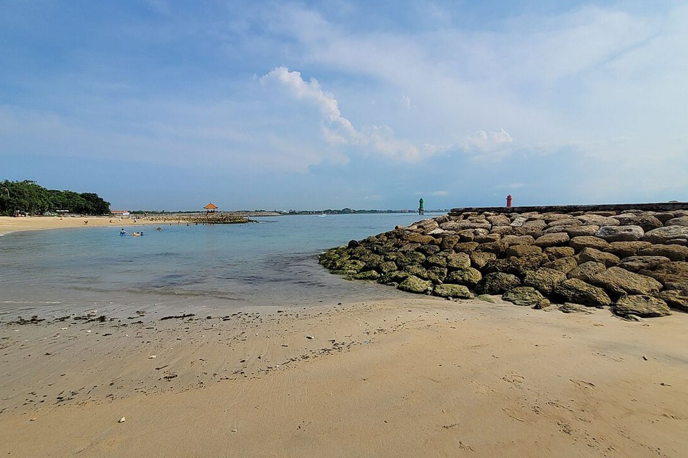

Baby sitter & pengasuh anak di Sanur
Air tenang yang terlindung karang dan jalur pantai yang datar menjadikan Sanur bagian Bali paling mudah untuk bayi dan balita.

Mengapa keluarga memilih Sanur
Karang membuat ombak tetap kecil, jadi si kecil bisa bermain air dengan aman saat pasang. Jalur pantai 5 km ramah stroller, dan kebanyakan hotel, kafe, serta taman bermain bisa dijangkau jalan kaki.
Yang dilakukan pengasuh kami di sini
Pagi di pantai dan membuat istana pasir, berenang di kolam hotel, menemani tidur siang saat Anda SUP atau snorkeling, dan menjaga di malam hari agar Anda bisa makan malam sambil menikmati sunset.
Perlu diketahui
Saat surut, air mundur jauh melewati karang — rencanakan berenang saat pasang. Fast boat ke Nusa Lembongan dan Nusa Penida berangkat dari pantai Sanur.
Pengasuhan yang pas untuk liburan Anda

Baby sitter per jam
Makan malam, spa, les surfing — mulai 3 jam.

Pengasuh seharian
Pantai, kolam, tidur siang dan makan — Anda benar-benar berlibur.

Pengasuh malam
Menidurkan, menyusui botol, dan bangun malam — Anda bisa tidur nyenyak.

Pengasuh bayi & newborn
Pengasuh berpengalaman merawat bayi di bawah 12 bulan.

Pengasuh saat jalan-jalan
Ikut menemani keluarga Anda saat day trip dan ke pulau sekitar.

Baby sitter di hotel & vila
Kami datang ke hotel atau vila Anda di seluruh Bali.

Pernikahan & acara
Pojok anak dan baby sitter untuk perayaan Anda.

Pengasuh jangka panjang
Untuk keluarga yang tinggal di Bali.